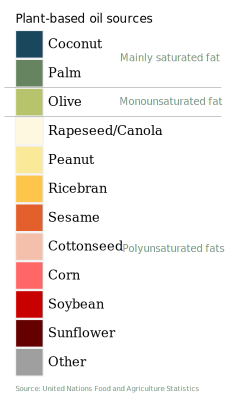
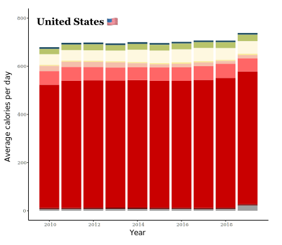

Relevant research and resources
Coronary disease
- Greater amounts of linoleic acid oxidation are found in the LDL cholesterol and plasma of patients with atherosclerosis, with the degree of oxidation determining the severity of the clogging. A diet higher in oleic acid or lower in linoleic acid decreases LDL susceptibility to oxidation.
Obesity
- Reducing dietary linoleic acid prevents fatty tissue from accumulating and reverses the obesogenic effects of a high-fat diet. In animal diets designed to model the 20th century increase in PUFA consumption, changes closely correlate with prevalence rates of obesity.
Cognitive decline
- A low Omega-6 to Omega-3 ratio, either by reducing Omega-6 or increasing Omega-3, showed moderate support in sustained cognitive function for preventing dementia.
Arthritis and inflammation
- Omega-6 PUFA levels were almost double in bones with osteoporosis and participants with higher levels of Arachidonic acid (linoleic acid is a precursor) tended to have higher inflamed joint severity.
- High levels of soybean oil can promote the body’s inflammatory response. High inflammation can lead to a series of chronic diseases, including pregnancy eclampsia, atherosclerosis, rheumatoid arthritis and insulin resistance.
Infertility
Mood disorders
- PUFAs alter the lipid bilayer of mammal cells and young people with a high ratio of Omega-6 to Omega-3 exhibited higher rates of mood disorders and depression.
Asthma
About the author
Danica Jefferies is a recent graduate of the data journalism master’s program at Northeastern University. She held a yearlong internship with NBC News Data/Graphics producing stories on herbicide usage and psychedelic therapy. Jefferies previously studied biostatistics at the University of Virginia, and is passionate about data analysis and exposing wrongdoing in the food and agriculture industry.